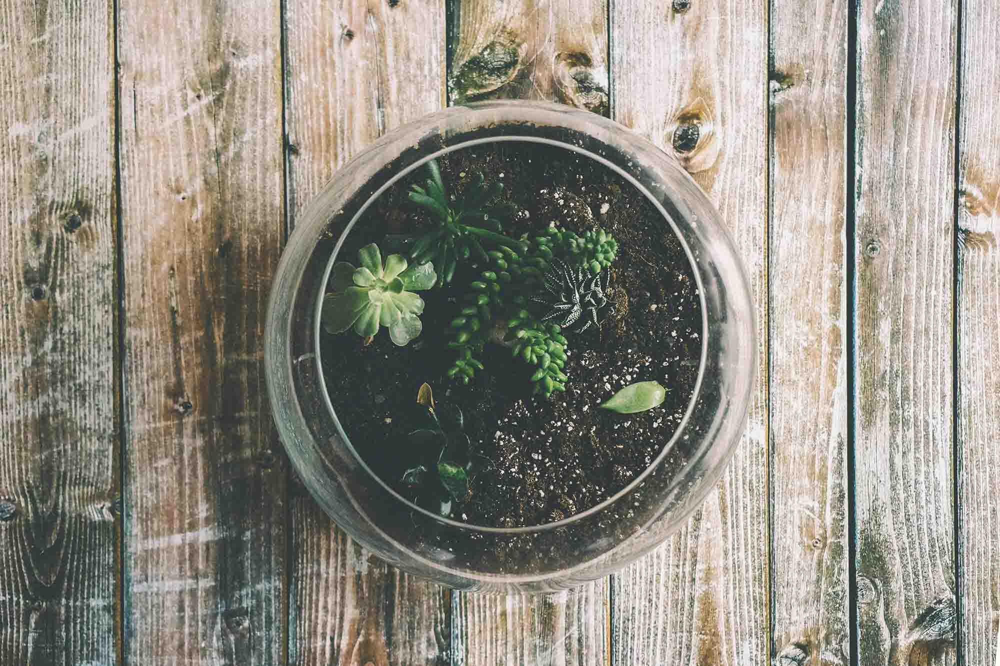
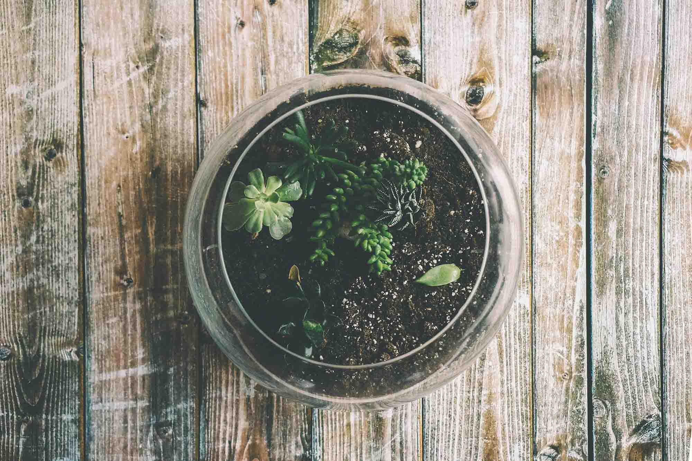

Hi! If you found yourself on this page, there is a chance you are a plant enthusiast! Good thing because I am too! I made my first terrarium this year and it was so pretty I decided to make this website to help you make yours.
If you are like me and have a busy lifestyle and struggle to care for plants because you are too busy to provide proper care—terrariums are definitely the way to go. They are easy to manage and make your space beautiful while requiring low maintenance.
Before we begin, you need to decide if you want a tropical terrarium or a succulent terrarium:
If you want a quick video tutorial click the link below. Otherwise, stick around and let’s enjoy this process together.
Click here for how to make a simple terrariumImage(s) courtesy of Pexels